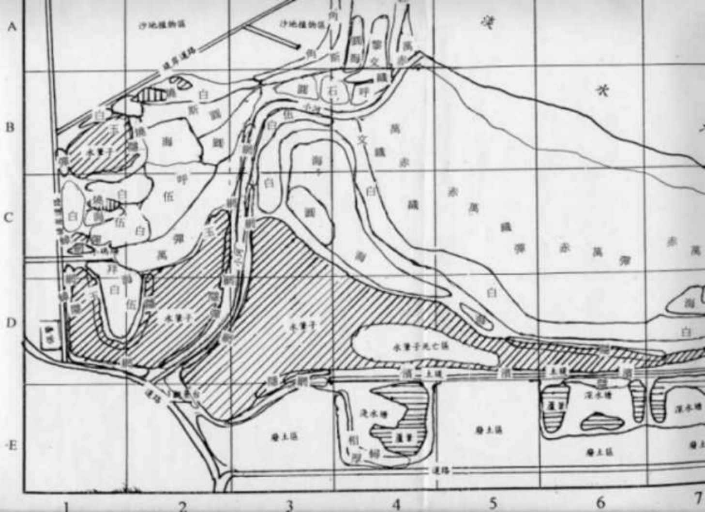

|
2、研究挖子尾潮間帶生物的分佈圖 由於挖子尾生態保護區，區域廣大，且生物類很多，整個地區的分佈調查，十分不容易，而且不準確性較差，就以先前所分割成 35 區，一個一個區域的調查，各種生物的分佈區、繪製小區塊生物分佈圖，並拍照以供比對。並在小區塊內研究各種植物的族群特性，和群落之間的關係。 |
|
挖子尾潮間帶生物的分佈圖  |
符號
生物種類
主要分布區
白 白扇招潮蟹
BlB2ClC2C3C4DlD2D5D6D7沙泥地
網 網紋招潮蟹
ClC3DlD2El高潮帶泥濘地
厚 台灣厚蟹
葦原區泥濘地
﹒
濱 濱蟹(隆脊張口蟹)
D4D5D6潮上帶土堤硬泥地
伍 伍氏厚蟹
ClC2C3DlD2
高潮帶沙泥地
呼 北方呼喚招潮蟹
B4C2D7 中潮帶沙泥地
圓 圓球股窗蟹
A4B2B3C3C4D7中高潮帶沙地
蟳 鋸緣青蟳
E4泥地與全潮間帶
拜 角眼拜佛蟹
Cl沙泥地
石 石蟳
B3B4中低潮帶沙泥地
斯 斯氏沙蟹
B2B3B4A4高潮帶沙地
萬 萬歲大眼蟹
B4B5ClC2C4C5C6C7D6D7泥濘地
相 摺痕相手蟹
水筆子林中與四周
海 海和尚
BlB2B3ClC2C3C4D5D7 沙地
雙 雙齒近相手蟹
E4水筆子林中與四周
 黎 紅點黎明蟹
A4低潮帶濕沙地
黎 紅點黎明蟹
A4低潮帶濕沙地
角 角眼沙蟹
A4B3的潮上帶乾沙地
玉
玉黍螺
BlD1區岸側水筆子樹桿或樹葉上
燒 燒酒螺
BlB2ClC2D2沙泥地少量分布
文 文蛤
A4濕沙地
赤 赤嘴仔
B4B6B7C4C5C6C7泥濘地
織 織紋螺
B4C4C5C6沙地與泥濘地有少量分布;
彈 彈塗魚
B1ClC2C3C4C5C6C7DlD2E4
蟲 海虫
中高潮帶沙泥地
紅 紅虫
A4濕沙地
蝦 蝦猴
B3B4ClC2沙泥地中．
藤 藤壺
整個潮間帶的物體上
蟑 海蟑螂
D1D7的岩石中
秀 秀麗長方秀蟹
B1B2水筆仔林中
藍 藍色小蟹
C1小馬頭前方
不知明蟹1
B3B4岩石縫下
不知明蟹2 B1B2D1水筆仔林中